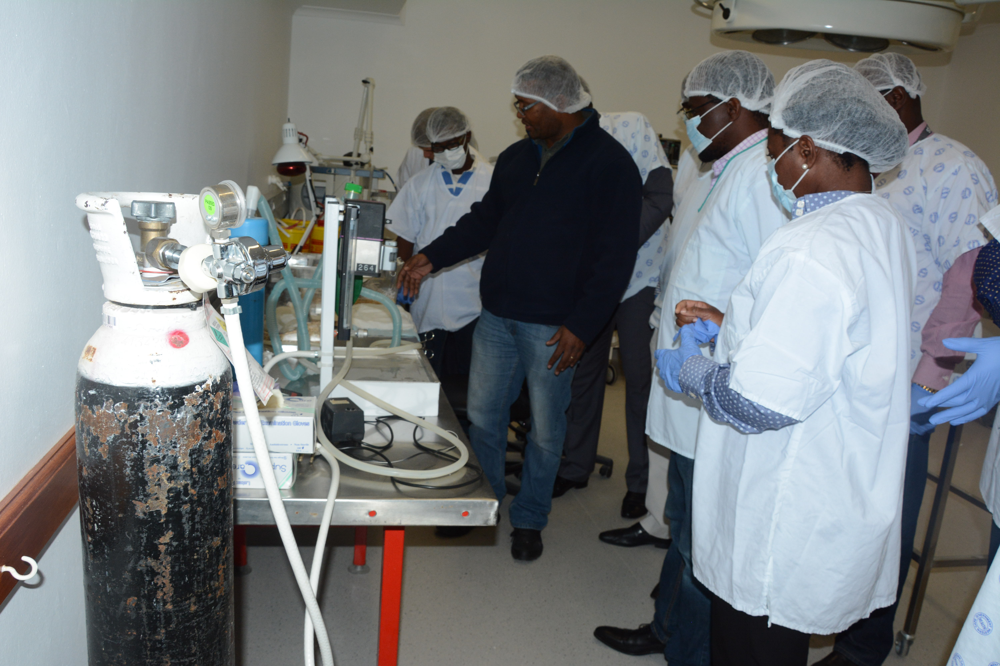

The African Academy of Sciences (AAS) and the NEPAD Planning and Coordinating (NEPAD) Agency created AESA with the support of the Wellcome Trust, the Bill & Melinda Gates Foundation and the UK’s Department for International Development (DFID). This was to implement Resolution 10 of the Declarations, Decisions and Resolutions from the January 2015 African Union Heads of State Summit endorsing the establishment of AESA as a platform to encourage the creation of health innovations for poor communities.
This is the first of annual letters to update you, our stakeholders and partners, on the progress of the Alliance for Accelerating Excellence in Science in Africa (AESA). We hope that these will stimulate further discussion and action across the continent to promote the growth of science, technology and innovation, including setting the scientific agenda for Africa for 2017 and beyond. Since we launched AESA in September 2015, we have been laser focused to improving science on the continent. We are all about impact and realise the role that we, in partnership with African and global institutions can play in harnessing science to achieve the SDGs and knowledge based economies to develop the continent.
We are deeply committed to exponentially growing our pool of world-class researchers, instilling a culture that promotes scientific leadership and excellence, improving our research infrastructure, promoting trans-disciplinary science within and between institutions, fostering development of new tools and technologies and increasing training opportunities for young scientists.
Over the past year, we have taken some bold steps to fulfil our mission of becoming a major funding platform and setting the science agenda for Africa:
-
We are launching new programmes and expanding our support to the brightest scientists in Africa, working in the right places and environments, to implement key programmes that can foster scientific excellence, leadership and innovations that impact health and developmental challenges.
-
With our partners earlier last month at the World Economic Forum in Davos, we jointly announced the creation of the Coalition for Research, Innovation & Entrepreneurship (CARIE), an alliance of African leaders and international funders who have joined forces to catalyse investment in research and innovation. Through CARIE, global funders, private corporations and philanthropists can coalesce to better coordinate spending and support regional science initiatives like AESA, Planet Earth Institute and others.
-
With our partners, we are already investing US$150 million in supporting research and in catalysing innovation on the continent. In partnership with the Bill & Melinda Gates Foundation, we launched Grand Challenges Africa (GCA) in early 2016, and in November, we announced two GCA requests for proposals for Innovation Seed Grants. These requests seek solutions and strategies to reduce maternal, neonatal and child deaths in Africa, and creative communication approaches to inspire African governments to fund research and development.
-
We have established the Good Financial Grant Practice (GFGP) a programme and framework to ensure transparency, accountability and good stewardship of the grants we award. This innovative research management approach will ensure that every dollar meant to support science in Africa is used for that purpose only.
-
We have attracted a dynamic team of people, and installed world class systems and policies to build, expand and manage our organisation and programmes. This includes eminent reviewers and advisers, financial and grant management systems, monitoring and evaluations teams.
-
We are training climate scientists through the Climate Impact Research Capacity and Leadership Enhancement (CIRCLE) fellowship programme, which provides early career researchers with support to conduct research and generate knowledge to help the continent effectively address the impact of climate change.
-
We are expanding our programmes into new science frontiers including genomics, precision medicine and stem cell research to address infectious and non-communicable diseases.
-
We are developing strategies to address STEM (Science, Technology, Engineering and Mathematics) education and encouraging trans- and interdisciplinary approaches to problem solving, for example, exploring the nexus of health-food - water - sanitation-climate sciences, in Africa.

AESA was established to disrupt the status quo and to ensure that Africa takes ownership and leadership in shaping the destiny of African science. Further, our programmes are designed to train scientists, help them build their careers and provide the infrastructure they need to conduct quality research. This leadership should translate into increased funding for science to ensure that Africa’s gross expenditure of R&D (GERD) as a percentage of gross development product (GDP) increases from the current 0.45 per cent. Increasing R&D expenditure has had a tremendous impact for countries, such as China. Growing the number of researchers, patents and innovations, ultimately translates into robust economic growth.
“We are funding the development of AESA and share the vision of supporting the next generation of outstanding African researchers, who will help solve some of the continent’s greatest health and economic challenges.”
Joint statement from the DFID, Wellcome Trust and Bill and Melinda Gates Foundation
Looking Ahead at AESA’s priorities for the continent in 2017:
Expanding our partner network:
Our global partners have been critical in moving our STI agenda forward and today, partnerships are more important than ever. For example, funders are not only making significant financial investments, they are also helping us define a new era in global partnerships, ensuring that decisions for Africa are made on the continent. This is critical to ensure that the research and human capital Africa produces meets the needs of the continent especially considering the new science frontiers. We will continue to leverage these partnerships, build new alliances and establish a network of social entrepreneurs and impact investors, especially through the CARIE Initiative. The challenges the continent faces require a collective effort and voice.
Inspiring African governments to increase R&D investments
Commercialising our best ideas in science is critical for building the economic engines of countries in Africa, but it’s not happening fast enough.
AESA is establishing advocacy initiatives to inspire African governments, philanthropists and the private sector to invest in STI. This will include engaging scientific leaders to show policymakers both the promise and impact of investing in R&D in ways that will bring products to market. This is particularly important in ensuring that governments promote polices to foster innovation as well as attain their 2007 commitment of allocating one per cent of their GDP to science at the African Union level.
African leaders such as Mauritian President and AAS Fellow H.E Ameenah Gurib-Fakim have been championing science globally and with great impact. AESA’s goal is to engage the research community continent wide in advocating for increased investments. We will provide a forum for African researchers to speak with one voice, share their concerns and set the stage for collectively identifying solutions that benefit everyone.
Climate Change
For example, the increasing environmental crises -- human or natural -- certainly require more evidence based policymaking. The challenges that climate change is posing for a continent most at risk to this global phenomenon require more investment in climate research and output to inform governments and communities’ responses. Africa’s climate scientists cannot produce this data unless they obtain sufficient funding for basic research, training and world class infrastructure.
While the data on the actual number of innovations produced is unavailable, the continent has seen some highly impactful innovations, including those funded through the Grand Challenges partners, ranging from a solar powered cold room for preserving farm produce created by Nnaemeka Ikegwuonu from Nigeria; a stove that purifies water developed by Keneth Ndua, a Kenyan social entrepreneur; and a mosquito repellent that can be safely used on babies, providing protection for four hours longer at a cheaper price by Peter Yiga from South Africa. Startups in Africa’s three leading tech entrepreneurship markets South Africa, Nigeria and Kenya had some of the biggest funding in 2016, as recorded by Disrupt Africa, although 2016 was down by 30.5% to $129 million from $185.7 million in 2015.
While governments have certainly demonstrated commitment to funding science, more still needs to be done, especially as Africa’s patents are still trailing behind the rest of the globe with only 0.1 % of patents currently registered with the United States Patent and Trademark Office. Although patents don’t always translate to products and services, they are certainly an indicator of the innovations being developed on the continent and a potentially untapped source of income, which could be ploughed back into science.
Empowering Women in Science
A significant discrepancy exists between the number of men and women in Africa who pursue a career in science. Women make up 50 % of Africa’s population but the continent’s female scientists constitute only 30 per cent of the global share. We have an opportunity and a responsibility to make science attractive to women because Africa can’t succeed in developing science or lifting the continent out of poverty without empowering this crucial part of the population. We must create conducive environments to increase the number of female scientists and to develop them into research leaders. At AESA, we continue to actively encourage and monitor our grant recipients to recruit more women in their programmes.
The time is now
It can be done. African science can grow. Innovation is an avenue for creating jobs and finding solutions to the health and developmental challenges we face. We believe in the future of this continent and we are committed to accelerating STI in ways that will benefit generations to come.
Looking ahead, 2017 must be the year we push ourselves forward and build on the enormous momentum we have gained. It means working together to translate rhetoric to action.
The future of this continent is in our hands. Our partners can and have made long-term commitments to support us but a true shift of the centre of gravity for African science will only happen when African governments, the private sector and philanthropists take more responsibility for driving and funding the science agenda on the continent.
We can take a giant step forward in 2017.
Tom Kariuki, PhD